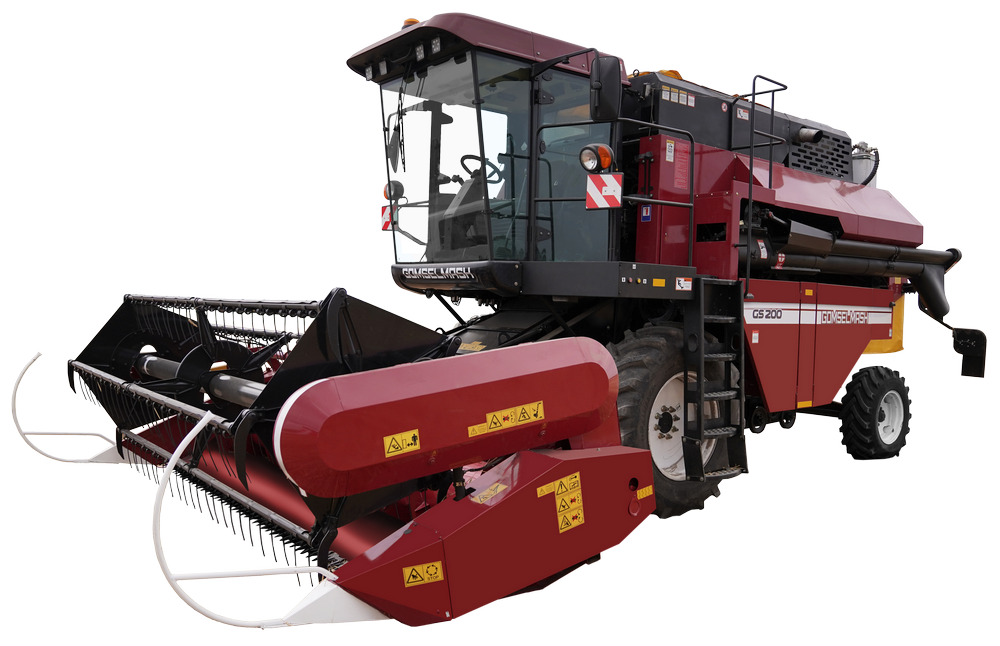

GOMSELMASH GS200
Это электронное пособие содержит подробные инструкции по эксплуатации, техническому обслуживанию и ремонту комбайна. Главное преимущество - доступность в любое время в любом месте.
-
Регулировка
ПРЕИМУЩЕСТВА ЗЕРНОУБОРОЧНОГО КОМБАЙНА GS200
-
Классические обмолот и сепарация
Проверенная временем классическая система обмолота и сепарации DRUM-FLOW c одним молотильным барабаном, битером и клавишным соломотрясом делают GS200 наиболее эффективным выбором для работы на полях с низкой и средней урожайностью.
-
Что вас ожидает
Система DRUM-FLOW в полной мере демонстрирует свою производительность при работе на сложных хлебах (высокая соломистость, засорённость, влажность). Если Вы работаете на уборке легкотравмируемых культур, таких как кукуруза, подсолнечник и др., на комбайн GS200 предусмотрена установка понижающего редуктора. Так достигается щадящий вымолот с минимальным повреждением зерна. После обмолота солома с незначительной частью свободного зерна поступают на шестилопастной отбойный битер диаметром 395 мм с частотой вращения 960 об/мин. Особая конструкция зазубренных делителей битера обеспечивает не только уверенную подачу соломистой массы, но и создаёт эффект вспушивания, что повышает эффективность сепарации даже сложных хлебов. Для максимально эффективного вымолота хлебной массы и повышения производительности в системе соломотряса установлен возврат необмолоченных колосьев на молотильный барабан. Наличие в комбайне относительно небольшого количества деталей позволяет Вам уменьшать время технического обслуживания и повышает его ремонтопригодность без снижения качества технологического процесса.
Бережная выгрузка за оптимальное время
– Объём бункера в 2 000 литров идеально подходит для малых и средних сельхозорганизаций с урожайностью полей 10-25 ц/га.
– Бережные выгрузка и обмолот дают возможность осуществлять уборку культур на семена, тем самым расширяя спектр возможностей комбайна.
Обработка незерновой части урожая
– Помимо укладки в валок неизмельченную массу можно собирать в копны. Это позволит сделать опциональная установка копнителя.
Универсальность при работе на различных культурах
– Какую культуру Вы бы не выращивали – Вы сможете убрать её комбайном GS200 с применением наших адаптеров.
– Более подробную информацию о ценах, условиях приобретения и поставках комбайнов Вы можете получить у дилера в своём регионе.